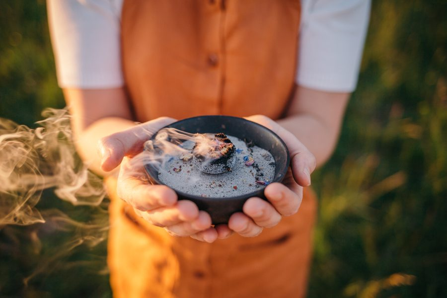

Räuchern
Beifuß räuchern — Anleitung & Wirkung
Die „Mutter aller Kräuter“ wächst an jedem Wegrand im Oberland. So erkennst, erntest, trocknest und verräucherst du sie — und das alte Brauchtum dahinter.
Weiterlesen